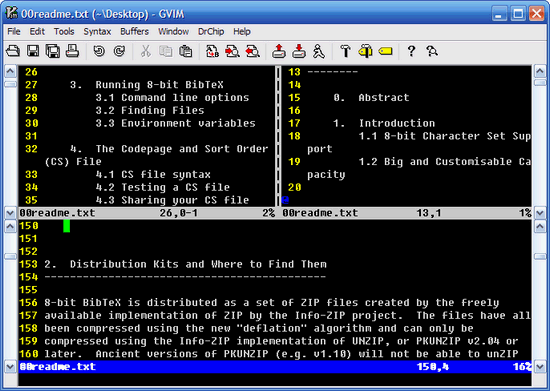
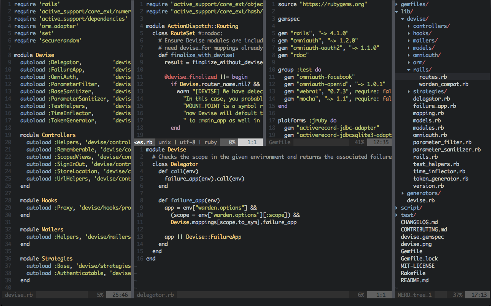
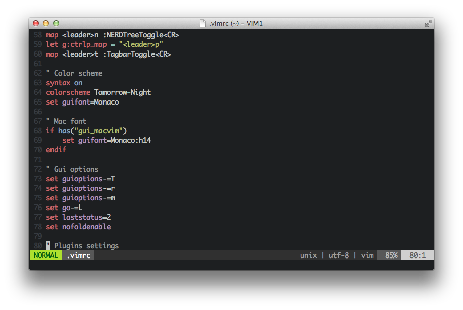
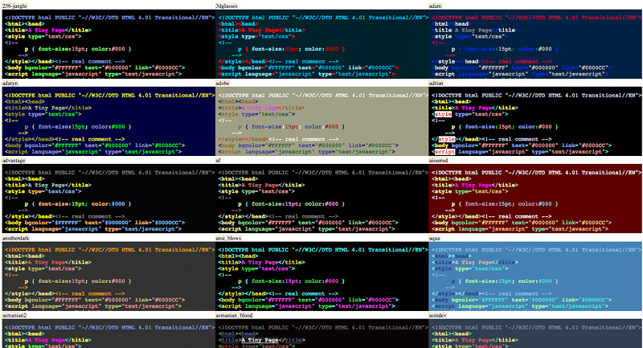
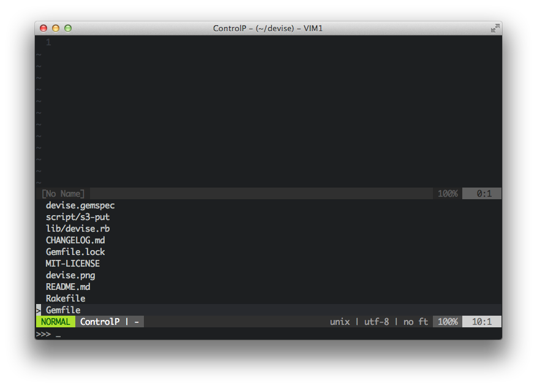
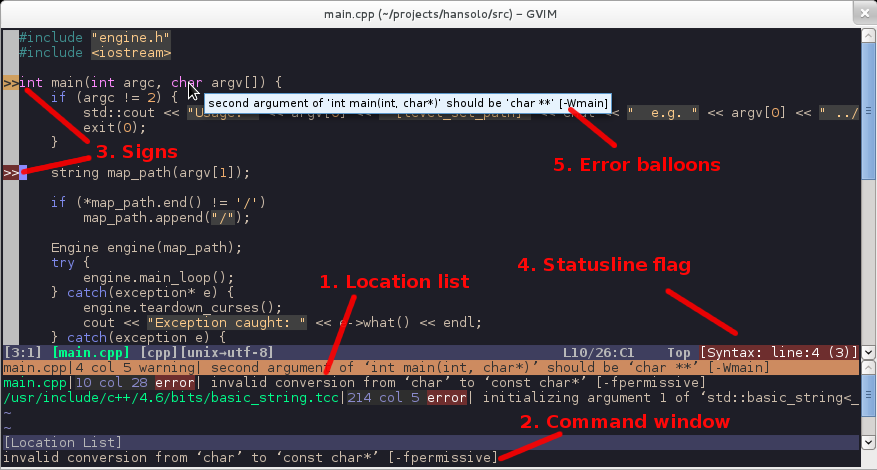
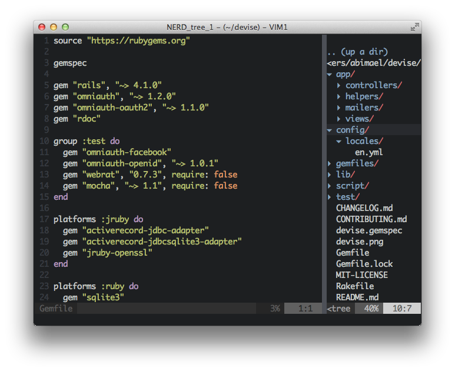
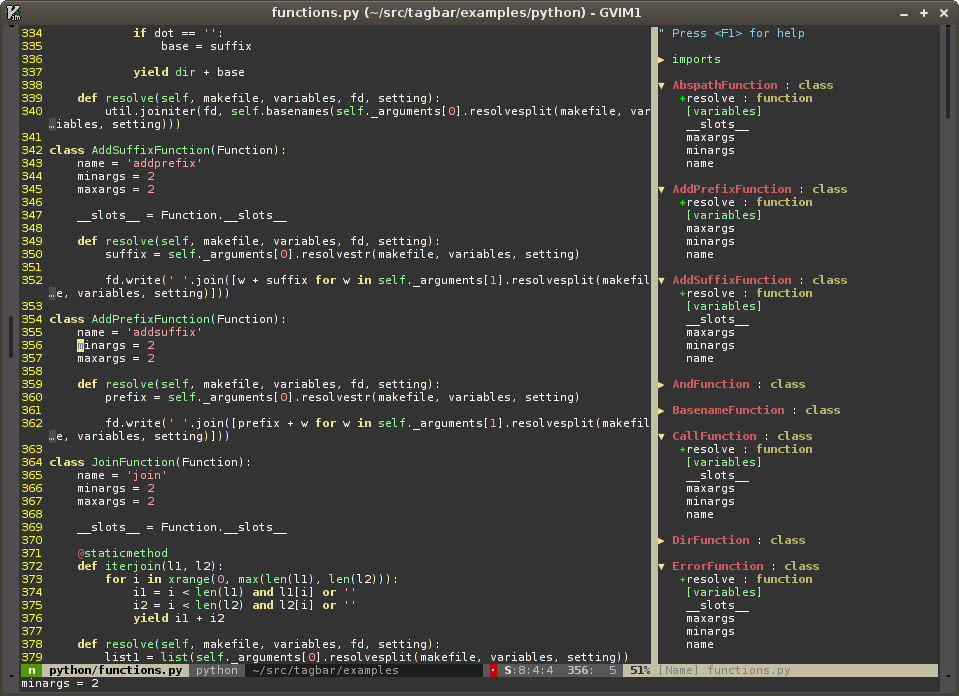

Desarrollando con VIM
¿Qué es VIM?
Un editor de texto
Historia
ed
- Editor en linea
- Primero en soportar expresiones regulares
ex
- Mejor interfaz
- Mas opciones
vi
- En pantalla
- Inicialmente creado como "plugin" para ex
- Estándar en sistemas UNIX
Características
Multiplataforma
Soporte para muchos lenguajes
Splits
vimdiff
Configurable
Macros
Temas
Plugins
Vim tiene su propio lenguaje de script.
¿Cómo instalar?
# Derivados de debian
$ sudo apt-get install vim
# OSX
$ brew install macvim --override-system-vim
# Windows
# Descargar instalador desde www.vim.org
Ventajas de VIM sobre otros editores
Ligero
Lo puedes usar en sistemas con recursos limitados.
Portable
Puedes usar las mismas configuraciones en todas tus computadoras.
Minimalista
Solo texto.
Está en cualquier lugar
Desde computadoras personales hasta servidoes.
Plugins
CtrlP
Fugitive
Wrapper de Git en VIM
Syntastic
NERD Tree
Tagbar
You Complete Me

Cómo iniciarse
Instala alguna distribución.
$ curl -Lo- https://bit.ly/janus-bootstrap | bash
Enserio
- Crea tu propio .vimrc
Consideraciones
- Toma tu tiempo
- Experimente
- Sé productivo
Recursos
- Vim Adventures
- Vim Awesome
- Vim Casts
- $ vimtutor
:q
Usar en caso de emergencia.